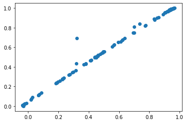
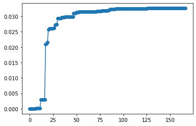

Trp-cage WE Optimization

[1]:
from msm_we import optimization as mo
import numpy as np
import matplotlib.pyplot as plt
Load haMSM
[2]:
import pickle
with open('data/pickled_model', 'rb') as inf:
model = pickle.load(inf)
Compute discrepancy, variance
[3]:
steady_state_distribution = model.pSS
n_active_we_bins = 10
[4]:
discrepancy, variance = mo.solve_discrepancy(
tmatrix = model.Tmatrix,
pi = steady_state_distribution,
B = model.indTargets
)
[10/04/22 10:35:18] INFO Computing pi matrix optimization.py:57
Visualize discrepancy and \(\pi \cdot v\)
[5]:
model.get_committor()
plt.scatter(discrepancy, model.q)
[5]:
<matplotlib.collections.PathCollection at 0x7f71f3e5f430>

[6]:
pi_v = steady_state_distribution * variance
pi_v_sort = np.argsort(discrepancy).squeeze()
cumsum = np.cumsum(pi_v[pi_v_sort])
plt.plot(cumsum, '-o')
[6]:
[<matplotlib.lines.Line2D at 0x7f71f3b28d90>]

Compute WE bin assignments for each MSM microstate
This is a list with an element for each MSM microbin, which is the integer index of the WE bin it’s assigned to.
In other words, microstate_assignments[microbin_index] == WE bin index of that microbin
If there are big jumps in our discrepancy function, then the uniform-width bins won’t appropriately divide the space.
[7]:
microstate_assignments = mo.get_uniform_mfpt_bins(
variance, discrepancy, steady_state_distribution, n_active_we_bins
)
microstate_assignments
[7]:
array([5, 6, 0, 6, 0, 0, 5, 0, 7, 0, 0, 0, 0, 5, 0, 0, 6, 6, 7, 6, 6, 7,
0, 6, 7, 6, 0, 6, 7, 6, 0, 7, 0, 7, 0, 7, 7, 7, 7, 7, 7, 7, 0, 7,
7, 7, 7, 7, 7, 7, 7, 7, 7, 7, 7, 7, 7, 7, 7, 7, 7, 7, 7, 7, 7, 7,
7, 7, 7, 7, 7, 7, 7, 7, 7, 7, 7, 7, 7, 7, 7, 7, 7, 7, 7, 7, 7, 7,
7, 7, 7, 7, 7, 7, 7, 7, 7, 7, 7, 7, 7, 7, 7, 7, 7, 7, 7, 7, 7, 7,
7, 7, 7, 7, 7, 7, 7, 7, 7, 7, 7, 7, 7, 7, 7, 7, 7, 7, 7, 7, 7, 7,
7, 7, 7, 7, 7, 7, 7, 7, 7, 7, 7, 7, 7, 7, 7, 7, 7, 7, 7, 7, 7, 7,
7, 7, 7, 7, 7, 7, 7, 7, 7, 7, 7, 0, 7])
We can instead use the k-means clustered MFPT bins.
[8]:
microstate_assignments = mo.get_clustered_mfpt_bins(
variance, discrepancy, steady_state_distribution, n_active_we_bins
)
microstate_assignments
[8]:
array([4., 2., 1., 2., 1., 1., 4., 5., 3., 1., 1., 1., 1., 4., 1., 1., 2.,
7., 6., 7., 2., 6., 1., 2., 3., 7., 5., 2., 6., 2., 1., 3., 5., 3.,
5., 6., 3., 6., 3., 0., 0., 6., 1., 3., 6., 0., 6., 6., 3., 3., 3.,
6., 3., 3., 6., 0., 6., 6., 0., 6., 0., 3., 6., 3., 6., 0., 0., 6.,
0., 6., 3., 0., 3., 0., 0., 0., 0., 0., 0., 3., 6., 6., 6., 0., 6.,
0., 0., 0., 6., 6., 0., 6., 0., 6., 6., 6., 6., 6., 0., 6., 0., 6.,
0., 0., 0., 0., 0., 0., 0., 0., 6., 0., 6., 6., 0., 0., 6., 0., 0.,
0., 0., 0., 0., 0., 6., 0., 0., 6., 6., 0., 0., 0., 0., 0., 0., 0.,
0., 0., 0., 0., 0., 0., 0., 0., 0., 0., 0., 0., 0., 0., 0., 0., 0.,
0., 0., 0., 0., 0., 0., 0., 0., 0., 0., 0., 0., 5., 0.])
[9]:
# Add entries for the basis/target states, since MSM-WE sets those as the last two clusters
microstate_assignments = np.concatenate(
[microstate_assignments, [n_active_we_bins - 2, n_active_we_bins - 1]]
)
microstate_assignments
[9]:
array([4., 2., 1., 2., 1., 1., 4., 5., 3., 1., 1., 1., 1., 4., 1., 1., 2.,
7., 6., 7., 2., 6., 1., 2., 3., 7., 5., 2., 6., 2., 1., 3., 5., 3.,
5., 6., 3., 6., 3., 0., 0., 6., 1., 3., 6., 0., 6., 6., 3., 3., 3.,
6., 3., 3., 6., 0., 6., 6., 0., 6., 0., 3., 6., 3., 6., 0., 0., 6.,
0., 6., 3., 0., 3., 0., 0., 0., 0., 0., 0., 3., 6., 6., 6., 0., 6.,
0., 0., 0., 6., 6., 0., 6., 0., 6., 6., 6., 6., 6., 0., 6., 0., 6.,
0., 0., 0., 0., 0., 0., 0., 0., 6., 0., 6., 6., 0., 0., 6., 0., 0.,
0., 0., 0., 0., 0., 6., 0., 0., 6., 6., 0., 0., 0., 0., 0., 0., 0.,
0., 0., 0., 0., 0., 0., 0., 0., 0., 0., 0., 0., 0., 0., 0., 0., 0.,
0., 0., 0., 0., 0., 0., 0., 0., 0., 0., 0., 0., 5., 0., 8., 9.])
Create OptimizedBinMapper
[10]:
base_mapper = model.clusters.bin_mapper
n_pcoord_dims=1
[11]:
# Create the new bin mapper for WESTPA
we_bin_mapper = mo.OptimizedBinMapper(
n_active_we_bins,
# In case the pcoord is extended, this is the original pcoord dimensionality
n_pcoord_dims,
# If the pcoord was extended, pcoord boundaries are in the original pcoord space
model.basis_pcoord_bounds,
model.target_pcoord_bounds,
# The original, non-Optimized BinMapper that WESTPA was run with.
# Used for stratified clustering
base_mapper,
microstate_assignments,
model.clusters
)
we_bin_mapper
[10/04/22 10:35:19] INFO Multiple arguments provided to binmapper initializer, creating new optimization.py:177 object
INFO Clusterer has 167 total clusters (include 1 for basis and 1 for optimization.py:237 target)
[11]:
<OptimizedBinMapper at 0x7f71f3a89790 with 10 bins>
[12]:
we_bin_mapper.microstate_mapper
[12]:
array([4., 2., 1., 2., 1., 1., 4., 5., 3., 1., 1., 1., 1., 4., 1., 1., 2.,
7., 6., 7., 2., 6., 1., 2., 3., 7., 5., 2., 6., 2., 1., 3., 5., 3.,
5., 6., 3., 6., 3., 0., 0., 6., 1., 3., 6., 0., 6., 6., 3., 3., 3.,
6., 3., 3., 6., 0., 6., 6., 0., 6., 0., 3., 6., 3., 6., 0., 0., 6.,
0., 6., 3., 0., 3., 0., 0., 0., 0., 0., 0., 3., 6., 6., 6., 0., 6.,
0., 0., 0., 6., 6., 0., 6., 0., 6., 6., 6., 6., 6., 0., 6., 0., 6.,
0., 0., 0., 0., 0., 0., 0., 0., 6., 0., 6., 6., 0., 0., 6., 0., 0.,
0., 0., 0., 0., 0., 6., 0., 0., 6., 6., 0., 0., 0., 0., 0., 0., 0.,
0., 0., 0., 0., 0., 0., 0., 0., 0., 0., 0., 0., 0., 0., 0., 0., 0.,
0., 0., 0., 0., 0., 0., 0., 0., 0., 0., 0., 0., 5., 0., 8., 9.])